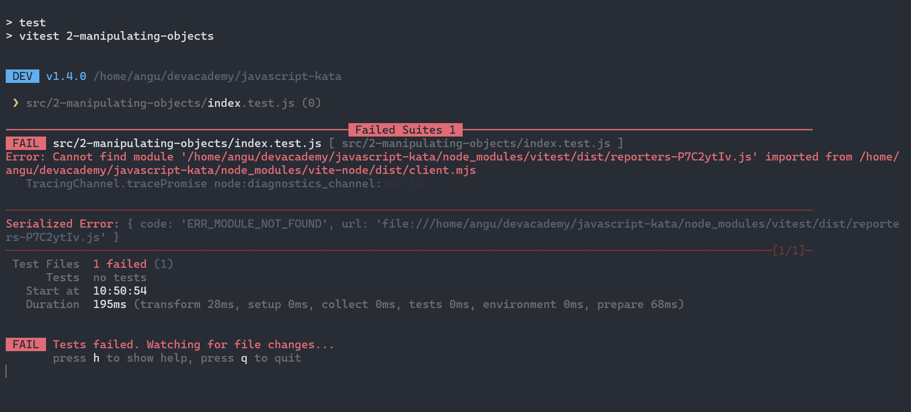
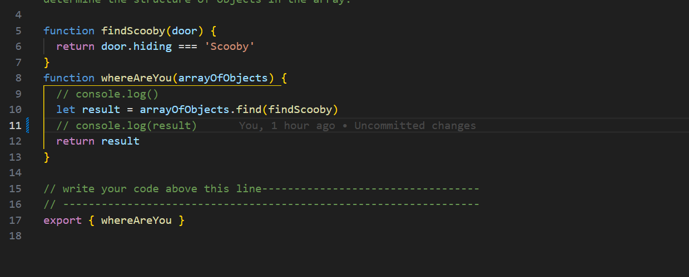

Problem Solving Anecdotes
A blog to talk about encountering problems through sprint 4 and how I combatted them.

A time where I was blocked on a simple problem
So after all the human skills I was gearing up to do some coding. You know what I mean. Ready for some technical challenge, get the brain spinning. However as soon as I start trying to run the "npm" tets on teh manipulating-objects file I got an error saying "Cannot find module"
Great... I tried everything, I google it, try to update npm and even deleting the specific json files in the depository and re-running npm install. It all didn't work... until I sent a message on discord and a administrator helped. He made me feel less stupid because he said the problem was weird. In the end the fix was to recheckout the npm files and BOOM done. I learnt it was okay to ask for help.
A time I elegantly solved a porblem
The problem was kata "whereAreYou". In this kata you had to find Scooby in an array of objects. I solved it by creating a function and then just calling that function with the recommended .find method.
I used console.log() to understand what the array looked like and how it was constructed. Then I manually found where "Scooby" was. He was held in the "Hiding" key. So I just made a small function that used an operator to see if the hiding key of an object was exactly equal to Scooby.
Reflect on how confident you feel using each of these problem-solving techniques/processes
| Techniques/Processes | Confident level 1-10 |
|---|---|
| Pseudocode | 8 |
| Trying something | 9 |
| Rubber ducky method | 2 |
| Reading error messages | 5 |
| Console.logging | 9 |
| Googling | 8 |
| Asking your peers for help | 4 |
| Asking coaches for help | 4 |
| Improving your process with reflection | 3 |